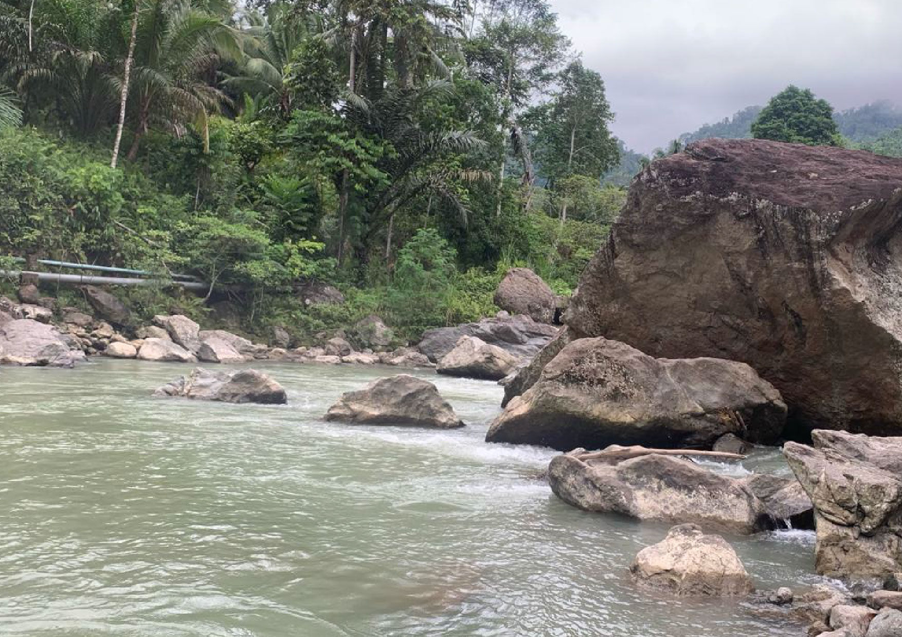

Wisata Desa
Desa wisata merupakan konsep pengembangan daerah yang menjadikan desa sebagai destinasi wisata, pengelolaan seluruh daya tarik wisata yang tepat diharapkan dapat memberdayakan masyarakat desa itu sendiri. Sesuai dengan prinsip utama dalam desa wisata, yaitu desa membangun. Dalam pengembangannya, desa wisata diharapkan dapat dikelola oleh masyarakat desa itu sendiri. Penyusunan organisasi untuk mengelola desa wisata dan kesiapan masyarakat dalam mengelola desa sangat diperlukan agar desa wisata dapat berkembang dengan optimal.
Wisata Alam Sungai Bambatunu
Selamat datang di keindahan alam Sulawesi Barat, tepatnya di Wisata Alam Sungai Bambatunu, tersembunyi di Desa Kaluku Nangka, Kecamatan Bambaira, Kabupaten Pasangkayu! Dengan jarak sekitar 20 km dari pusat kabupaten, Anda akan menikmati perjalanan sekitar 50 menit dengan motor menuju ke destinasi ajaib ini.
Pemerintah Desa Kaluku Nangka kini tengah menyiapkan kejutan ekstrem untuk Anda. Bersiaplah untuk pengalaman luar biasa dengan pembukaan jalur rafting/arum jeram dan fying fox di kawasan Sungai Bambatunu. Dengan adanya kegiatan seru ini, kami tidak hanya menawarkan pesona alam yang memikat, tetapi juga sensasi petualangan yang menggetarkan hati.
Nikmati keunikan pengalaman rafting/arum jeram menyusuri sungai yang memacu adrenalin, atau rasakan kebebasan meluncur di langit dengan fying fox. Inilah kesempatan Anda untuk merasakan petualangan yang belum pernah Anda alami sebelumnya.
Selain memberikan kenangan tak terlupakan, kehadiran kegiatan rafting/arum jeram dan fying fox di Sungai Bambatunu juga bertujuan untuk menghidupkan perekonomian Desa Kaluku Nangka. Dengan dukungan Anda, kami berharap dapat menjadi destinasi yang berbeda dan memberikan dampak positif bagi pertumbuhan ekonomi lokal.
Jadi, persiapkan diri Anda untuk petualangan tak terlupakan di Wisata Alam Sungai Bambatunu. Mari bergabung dalam keindahan alam dan sensasi ekstrem yang kami tawarkan, karena di sini, petualangan tidak pernah berakhir!.
Wisata Alam Air Terjun
Sambut keajaiban alam yang tersembunyi di Desa Kaluku Nangka, Kecamatan Bambaira, Kabupaten Pasangkayu, Provinsi Sulawesi Barat, di mana keindahan air terjun ini menantang Anda untuk menjelajahi alam dan merasakan pesonanya yang memukau. Perjalanan menuju ke sana memerlukan sedikit usaha, membutuhkan kendaraan pribadi untuk melalui jalan yang tidak begitu besar, dan akhirnya menapaki jalan setapak setelah memarkirkan kendaraan. Wisatawan akan berjalan kaki selama 45 menit untuk mencapai keindahan air terjun Kaluku Nangka.
Trekking menuju air terjun menantang dengan bebatuan dan hutan yang masih lebat. Namun, semua rasa lelah terbayar lunas ketika tiba di air terjun Kaluku Nangka. Suasana di sekitar air terjun tetap alami, segar, dan dedaunan yang rimbun memberikan teduh yang sempurna di bawah sinar matahari, mengubah panas menjadi sejuk. Air terjun ini menjadi tempat penyegaran, di mana rasa lelah seketika hilang saat berendam di bawah pancaran air yang jernih.
Penduduk setempat percaya bahwa air terjun Kaluku Nangka tidak hanya menawarkan keindahan, tetapi juga dapat menjadi pengobatan alternatif melalui pijat refleksi alami. Pilihlah waktu terbaik untuk berkunjung, ketika debit air mencukupi untuk menambah sensasi sejuk dan kesegaran dari air terjun. Pastikan untuk merencanakan kunjungan Anda dengan baik, karena debit air dapat berubah tergantung pada curah hujan.
Destinasi air terjun yang jarang dijamah ini menawarkan pengalaman wisata yang unik di Desa Kaluku Nangka. Mari temukan keindahan tersembunyi ini dan nikmati momen istimewa di bawah pancaran air terjun yang menakjubkan.